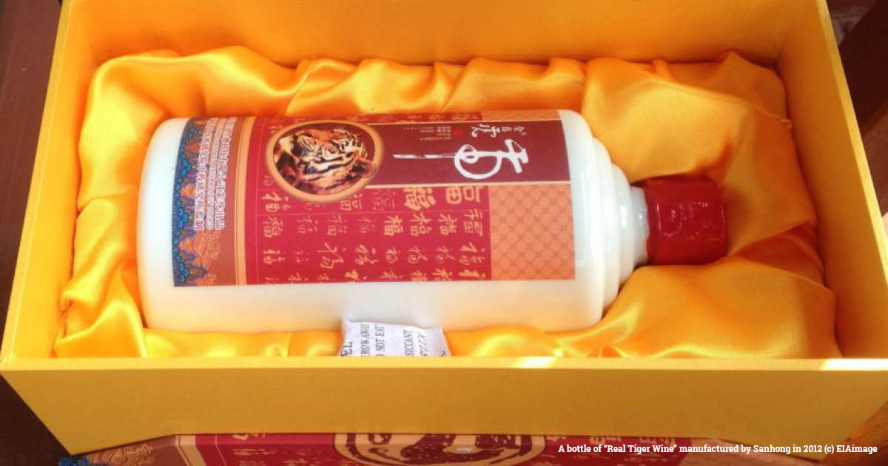

Flesh and Fur
A beauty isn't he?
Seen these creatures in a movie? Or in a recent art exhbition you've visited latey? I'm sure you know by now, these creatures are the Panthera Tigris,
or more commonly reffered to as Tigers.
Widely
known for its dark vertical stripes on orange fur, the animal is amongst some of the world's most
recognisable charismatic megafauna.
They are unfortunately, very severely endangered
The global population of wild tigers has plummeted from an initial 100,000 wild tigers at the start of the 20th century to an estimated 3,200 last year. This places them as one of the most endangered animals in the world right now.
As of 2022, wild tigers can only be found in 13 countries.
More than 50% of them reside in India.
These 13 countries are globally known as Tiger Range Countries. (TRCs) Only 8 of them are recorded to be active breeding grounds for wild tigers. These 8 countries are Bangladesh, Bhutan, Thailand, Indonesia, Russia, Malaysia, Nepal & India.
Why is this happening?
While habitat loss, poor land use and conflict with humans pose pressures to wild tiger populations, poaching and illegal trade have been the primary cause for their decline.
Every year, illegal wildlife trade amounts to $20 billion worth of animal parts, and is the third most profitable trade on the black market.
Tigers are mercilessly targeted by poachers to satisfy the demand from the trade.
From 2000 to 2018, more than 77% of illegal tiger parts were seized in TRCs, with India massively leading.
Parts were most commonly seized around these hotspots:
In and around protected tiger reserves in India
With India containing the largest wild tiger population globally, it's no surprise that poachers target these areas. According to multiple sources, a large part of tigers poached here are funneled into China due to high demands.
Around the island of Sumatra, Indonesia
Sumatra is home to the Sumatran Tigers. It is estimated that almost 80% of Sumatran Tiger deaths were due to illegal poaching, amounting to almost 40 last year.
Major international transportation Routes
These routes are often used by traffickers as means to transport tiger related commodities for illegal trading.
Tigers in Captivity
Over the years, the demand for tigers has led to the mass development of inhumane tiger breeding farms, where tigers are actively bred,
slaughtered and traded under undesirable conditions.
From 2005 to 2019, the percentage of whole tigers seized from captive-bred sources increased from 9% to over 50%, with a minimum of 744
suspected captive-bred whole tigers seized.
Thailand and Vietnam stand out, with 81% and 67% of their seized tigers suspected from captive-bred sources.
Tiger reserves play a significant part in Thailand's massive tourism industry. However, over the years there have been increasing reports of these reserves being irresponsibly run. Much of these reserves were reported to be farming tigers for unethical wildlife entertainment and illegal trading purposes.
The Wat Pha Luang Ta Bua Yanasampanno Temple
One such reserve is the Wat Pha Luang Ta Bua Yanasampanno Temple. For years, the temple has been
a popular tourist hotspot where tourists could see tigers and monks living together in harmony.
However, there have been allegations about the temple sedating their tigers and being involved in illegal wildlife trades.
In 2016, Thai officers raided the temple and seized a total of 60 dead cubs, amongst a plethora of
Tiger commodities. 147 other live tigers were also confiscated in the process.
Legislation & Policy Loopholes
Despite institutional efforts over the years to combat animal related crimes, policies still fall short in certain countries.
These countries have disproportionately low commercial penalties for illegal wildlife trade. Due to the commercial nature of such crimes,
active and potential poachers are massively incentivised to continue hunting.
Along with weak criminal response, endangered animal products continue to run rampant in black markets.
77% of online listings for tiger parts were located in Vietnam.
Vietnam is a striking example of this. Vietnam only
reported 89 cases of seizures in the last two decades. However, in 2019 to 2022 alone, it was reported that there were a minimum of
515 Vietnamese based facebook accounts actively selling tiger commodities.
The differences in these numbers are indicative of weak criminal responses within the country.
China's continued manufacturing of Tiger Bone Wine

Another case in point is the ongoing manufacturing of Tiger bone wine in China. Sanhong is a Chinese based company that manufactures tiger bone wine.
They specifically market their products to contain real tiger bones. In 2012, an investigation was launched to study the company and Chinese policies on endangered
Chinese Policies.
It was found that Chinese policies permitted the use of tiger bones from captive based animals within the country.
Sanhong was also found to be operating under legal permissions from the government to use tiger bones in their products as long as they did not list
"tiger bone" as an ingredient on the packaging.
How can we help?
While it is very much apparent that a significant part of conserving current wild tiger populations relies
on solving multiple institutional issues, there is still a lot we can do individually. It is not too late.
According to Panthera, a recent report has shown that global populations have stabilized in the past years due to improved investments in tiger conservation. Wild tiger populations have since increased by 40% from 2010
to 2022. Last year's count stood at approximately 4500.
We can help keep the numbers up by:
Engaging in responsible tourism and consumption
Demands are the reason why unethical wildlife entertainment and goods exist. Change starts from within. By being responsible in the places you visit and the products you consume, you can help to reduce demands for animal commodities.
It doesn't stop at consumerism. Be vocal about the need for change.
Intervene, educate, and raise awareness. Every individual enlightened is a step towards the right direction. Sign petitions to urge governments to reevaluate their legislation on animal related crimes.